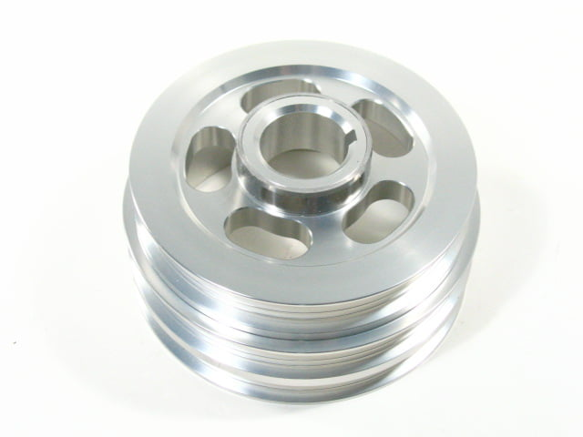
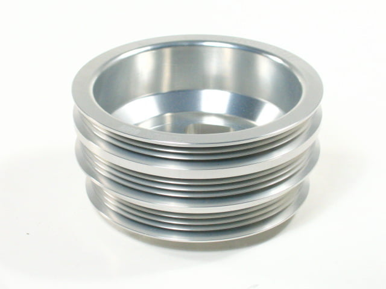

-
looks like it.Allout wrote: Is there enough meat in the VG30 balancer to bore out and re-key?
still deciding whether it's the right thing to do. I think I'm going to order another crank gear and use the old one as a spacer and have it milled down to proper size. easier than making a spacer from aluminum stock. -
New info.
Z31 Waterpump will work on VG33 with the Z31 pulley using the VG33 Crank Pulley. The Z31 uses a larger pulley by the looks of it, but I think it will be ok to use on the VG33.
The Z31 waterpump has a longer snout than the VG33. However, the VG33 waterpump pulley is a center-flange style, while the Z31 pulley is a frontal-flange style. What I mean is that the VG33 waterpump pulley has it's mounting surface smack dab in the middle of the inside diameter of the pulley. The Z31 has it's mounting flange on the outside edge of the inside diameter of the pulley. So no matter which pump you use, as long as you use the pulley that it came with, it will work.
The VG33 Balancer is a 32mm centre bore. A Z31 pulley is a 28mm centre bore (I think, haven't measured but it looks around there). The belt styles are different in that the 84-87 Z's came with a Vbelt style pulley end for the power steering setup. The 88 and 89 came with a ribbed pulley, I believe (Correct me if I'm wrong).
Using the 88-89 ribbed power steering pulley should allow the use of the VG33 balancer with the appropriate belt.
Another alternative that I will be looking into once a friend gets back to me is using the KA24E Pulley. It is a 30mm centre bore, and that is large enough to have it bored out 2 mm and have it re-re-keyed 2mm deeper along the inside of the key-way. I would do this with the Z31 pulley, but it does not have enough meat to do so… well it does, but the pulley extension (or snout, whatever you wanna call that elongated portion of the pulley) will have the keyway cut so close that it will be too thin. It WILL crack there, and you will wobble your crankshaft to death and spin your front bearing easy.
It looks like the belt positioning is the same for the KA and the VG33 pulleys too, and the rib numbers are the same too. I had my rotating assembly balanced without the balancer or the flywheel so that in the future if I can find a better pulley to use, I can swap them as long as they are 0 balanced.
As soon as I find someone with a spare performance KA pulley that I can look at locally, I'll give it a test mount if the price is right to have it rebored and keyed.
Quest VG33
OBX KA24DE


Not sure if I would go with OBX. It might be ok as long as I have it balanced. -
I should have snapped a picture when i swapped to a 3.3 water pump, but from what i remember it was the 3.3's WP that was longer. I couldn't back up the above comment, but will be interested how it works once you're up and running. My w-series WP and crank pulley had 4 ribs while the 3.3 WP and crank pulley has 5 ribs.Careless wrote: New info.
Z31 Waterpump will work on VG33 with the Z31 pulley using the VG33 Crank Pulley. The Z31 uses a larger pulley by the looks of it, but I think it will be ok to use on the VG33.
The Z31 waterpump has a longer snout than the VG33. However, the VG33 waterpump pulley is a center-flange style, while the Z31 pulley is a frontal-flange style. What I mean is that the VG33 waterpump pulley has it's mounting surface smack dab in the middle of the inside diameter of the pulley. The Z31 has it's mounting flange on the outside edge of the inside diameter of the pulley. So no matter which pump you use, as long as you use the pulley that it came with, it will work.
Using the 88-89 ribbed power steering pulley should allow the use of the VG33 balancer with the appropriate belt..
About the PS pulley, the bracket, pump design, and shaft diameter are all different than the 3.0 style.. So that part i'm still going to have to figure out. Note: my PS pulley came off a 4x4 frontier so it may be a little beefier/
I have to remember we are comparing two different pulley designs though, which is a good thing! -
[quote]88sinZ wrote:Hmmm, I may just run the car without power steering to get it to my parents house then. Not a far drive. only 20miles or so. I still have the 3.3 water pump and the old 3.0 water pump that i replaced with a new one (which i took off the 3.0 and then put on the 3.3 today). And the 3.3 one is definitely the shorter snout. I will snap pics. I don't mind running thinner ribbed belts on the pulley with more belt ribs. Seems ok, seeing as my alternator has 5 ribs and my 3 rib belt spun that fine.Originally posted by Careless
Maybe you should post pics of your oil sump tube and pan modification. I've got MAPP gas that I think I'm going to use to do that this weekend. -
pictures would be great to documentCareless wrote: I will snap pics.
Maybe you should post pics of your oil sump tube and pan modification. I've got MAPP gas that I think I'm going to use to do that this weekend.
here's a link to the sump tube/pan modification
http://z31performance.com/showthread.php?4800
i used oxy/acet so i didn't have to wait so long, but MAPP should heat it up enough -
I think I'm going to fasten my old vg33 pump to my vg30 block to keep any metal shards or heat away from my new rotating assembly. I'll be doing that tomorrow, I hope. Then I'm pushing the vg30 engine aside to make room for more useful stuff
Raff -
More info.
Not sure if the VG33 Pathfinder oil pumps are the same oil-pump drive diameter as the Quests 32mm crank snout, or whether it will work on any VG33, but the area where the passenger side alterntaor bracket would mount on the VG30 is the same as the pathfinder oil pump. it sticks passed the pan rail.
The quest vg33 does not stick passed the pan rail, and has to be shimmed up. Not sure how to do that at this point but I'll figure something out. Perhaps just a spacer dowel that I can easily drill into the oil pump hole to slide this dowel in, and then put some washers behind it. not sure if it will be strong enough to torque an alternator bracket to.
I'll come up with something.
Raff -
Seeing this informative thread already exists I'll see if it revives although my interest is in swapping VG30DE/TT parts into a VG33 to build a bullet proof circuit turbo motor. Not a dyno queen, 450 WHP will do, but with a very strong performance from 3500 RPM up.
First thing, the block and how far it can be safely and conservatively bored out to. So I'm thinking maybe out to 3.4, 3.5 max? Will get the block checked to see how thick the cylinder wall are but thick walls add to the rigidity of the block, I don't want to compramise that too much.
So, who is a good source for forged pistons and who knows VG's and can do a set of pistons with the basic info of bore size and compression ratio required? Head gaskets, will OE ones be OK? They are for VG30DETT's but here there is an overbore to take into account. I'm concerned about the extra exposure the inside ring of the gasket will get with a significant overbore.
That will do for the moment, see how we go with the above. -
Wait, what? You want to use VG30DETT parts on a VG33? Thats not going to happen. LOL
If the block we used is an accurate representation of all VG33 blocks, 99MM is do-able for bore size. If your building a drag race engine, and fill the block with something like hardblok you could make serious horsepower out of the 99mm bore. If you want a street engine, I would recommend not going past 98mm.
Any piston manufacturer can do pistons for the VG as long as you have all the proper specifications they need.
Custom headgaskets have to be made to accommodate the larger firing ring necessary for the large overbore. We are using an MLS headgasket that was custom made for this application.The bullshit stops, when the GREEN light drops.
Only babies cry about the bottle. -
Do you sell such gaskets?ZFast88Z wrote: Wait, what? You want to use VG30DETT parts on a VG33? Thats not going to happen. LOLI'd prefer a forged crank to a cast one eg
But do they all need a sample piston to work out the valve cutouts etc? I think it was Careless who suggested BRC already had that sort of knowledge.If the block we used is an accurate representation of all VG33 blocks, 99MM is do-able for bore size. If your building a drag race engine, and fill the block with something like hardblok you could make serious horsepower out of the 99mm bore. If you want a street engine, I would recommend not going past 98mm.
Any piston manufacturer can do pistons for the VG as long as you have all the proper specifications they need.
Custom headgaskets have to be made to accommodate the larger firing ring necessary for the large overbore. We are using an MLS headgasket that was custom made for this application. -
I sent a piston to weiseco to have forged pistons made for my 3.3l pathy motor. I can dig up the info if you need it. I ended up shelling out 900 though. -
They should be closer to 760 now. Unless aluminum prices went up a whole lot. I purchased pistons from someone who purchased them for 725 for two sets of RB30DET pistons.zmainiac wrote: I sent a piston to weiseco to have forged pistons made for my 3.3l pathy motor. I can dig up the info if you need it. I ended up shelling out 900 though. -
I'd appreciate any info that would help in ordering new pistons, going for a mild overbore now. No hurry. -
I bought a set of BRC pistons for my VG33 about 3 years ago. They're 8.0:1 compression and the wrist pin fits TT Eagle rods. I think they were one size oversize.
If you need any info PM me.Shiro #443

-
Can you use a 3.3 camshaft with 3.0 camshaft sprocket?
Im asking this question since I have a spare 3.3 engine and I would like to regrind the 3.3 cams and put them into my 3.0. Would it be counterproductive regrinding the 3.3 cams or does the original duration and lift not play into the outcome of regrinded camshaft?
Thanks for the responses!
-Colton

Copyright © 2006–. All rights reserved. Privacy Policy